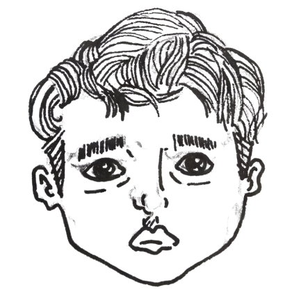
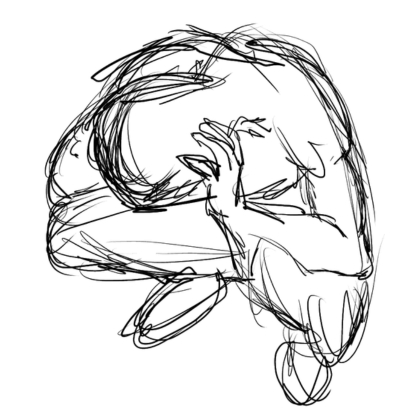
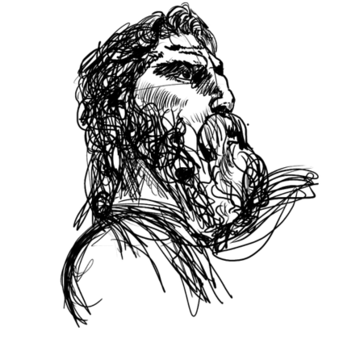

Modern Minimalism
Clean spacing, sharp hierarchy, readable sections, and no visual clutter.
Graphic Designer • Customer Service Pro • Virtual Assistant
I help businesses communicate better through clean design, reliable support, and practical problem-solving.
This site is built around clarity, calm layout, and useful storytelling. Each project should answer three things: what problem existed, what decision was made, and what result or lesson came from it.
Clean spacing, sharp hierarchy, readable sections, and no visual clutter.
Subtle hover states and reveal animations that make the page feel alive without being noisy.
Simple language, empathy for the reader, and obvious next steps for clients or recruiters.
Service
Social media visuals, brand assets, presentation layouts, and clean content design.
Admin tasks, scheduling, research, inbox support, documentation, and organized follow-through.
Clear communication, problem-solving, ticket handling, and customer-first conversations.
Portfolio

Built a clean personal brand hero with layered sketches, fixed navigation, and clear calls to action.

A sample case study layout for documenting customer issues, decisions, and service improvements.

A future-ready section for client website samples, useful for cold outreach and demos.
Interactive Element
This mini assistant is a simple front-end demo. It gives visitors quick answers about your work style, services, and process without needing a full AI backend yet.
Quick answers for visitors
Experience
Design assets, improve layouts, prepare visuals, and keep work clean and usable.
Handle customer concerns with patience, structure, and direct communication.
Support schedules, research, documentation, follow-ups, and daily business tasks.
Contact
Use this section for your email, social links, or a future Formspree contact form.